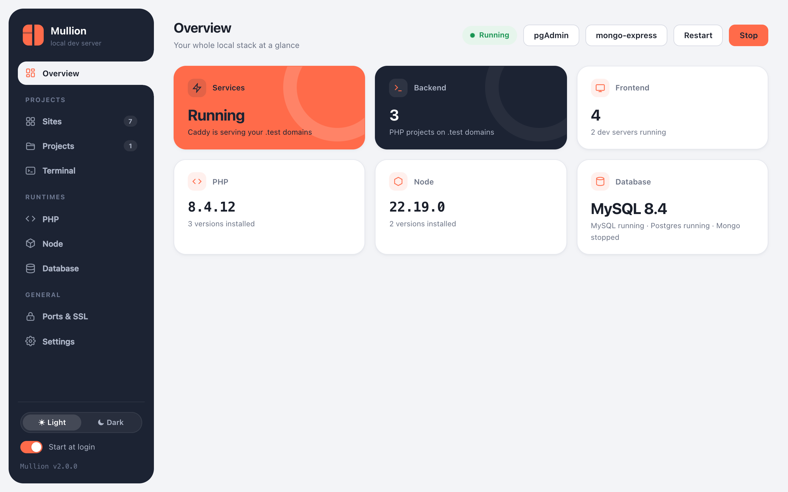

Getting started
Install Mullion, link your first projects, and open the control panel. This takes about five minutes.
What Mullion is
Mullion is a local development environment for macOS and Windows, shipped as a single binary. It serves:
- PHP backends (Laravel, Symfony, WordPress, …) through PHP-FPM or php-cgi
- JavaScript frontends (Nuxt, Next.js, Vite, Astro, …) through managed dev servers
Each project gets its own .test domain with trusted HTTPS, handled by Caddy. Mullion also manages PHP and Node versions, MySQL/MariaDB, PostgreSQL and MongoDB. You don't need Docker, a VM, or config files.
1. Install
On macOS, with Homebrew:
$ brew tap anabiiil/tap
$ brew trust anabiiil/tap
$ brew install mullion
$ mullion setupOn Windows, with Scoop:
> scoop bucket add mullion https://github.com/anabiiil/scoop-bucket
> scoop install mullion
> mullion setupFor other ways to install, see Installation. When setup finishes, open a new terminal: mullion, php, composer, node and npm then work from any folder.
2. Link a PHP project
$ cd ~/code/shop
$ mullion link # → http://shop.test
$ mullion secure # → https://shop.testMullion detects the project type, including Laravel's public/ folder. The site uses the global PHP version unless you pin another one with mullion isolate 8.2.
3. Link a frontend project
$ cd ~/code/storefront
$ mullion link --secure # → https://storefront.testA project with a dev script in package.json gets a managed dev server. Mullion runs npm run dev for you (or pnpm or yarn, depending on the lockfile) and puts the domain in front of it. Just open the link: a stopped server starts automatically, and an idle one goes back to sleep.
4. Open the control panel
- macOS: open Mullion.app from Applications (setup installs it), or run
mullion uito open the panel in your default browser. - Windows: double-click the desktop shortcut, or run
mullion ui. The panel opens in its own app window.

From here, the Sites page lists every project, and clicking a project's name opens its project page, with commands, workers, packages, Git and a terminal.
Where things live
| macOS | Windows | |
|---|---|---|
| Install folder | ~/.mullion | C:\Mullion |
| Settings & sites | ~/.mullion/config.json, sites.json | C:\Mullion\config.json, sites.json |
| Logs | ~/.mullion/logs/ | C:\Mullion\logs\ |
| Database backups (default) | ~/.mullion-Backups | C:\Mullion-Backups |
Your project folders are never moved or copied. Mullion only links to them, and mullion uninstall leaves them untouched.